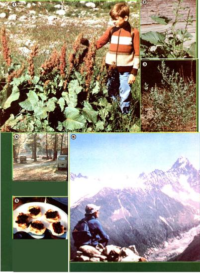

Elizabeth S. O'Neill cut her costs andenhanced her vacation by. . .
When we planned our recent overseas vacation, my husband and I realized that touring Europe after the "fall" (of the American dollar) would be a real challenge to our "makin' do" abilities. Yet, having spent many happy days "doing more with less" on four previous extended trips to the Alps and the Mediterranean area, we took a deep breath and decided to try it once more.
We knew that a vehicle would be necessary, as we wanted to see the back roads and visit many places that European public transportation doesn't reach. Unfortunately, the cost of new campers in Europe ($9,000 and up . . . and rising) was forbidding, and equipped-for-camping rental vans were in the $50-a-day range. So we scrubbed and tuned our venerable 1970 VW camper, and shipped it back to the continent of its birth. The $1,200 freight charge (from San Francisco to Le Havre, France) provided us with-in effect-a car, a hotel, and a do-it-yourself restaurant for eight months. (We followed the van over on an economy flight.)
The scenery was-from the start-every bit as marvelous as we remembered, though the trails did seem a mite steeper than they had on our first trip some 20 years before. The prices, however, really were steeper! We soon learned to walk (often slowly) uphill instead of riding the téléphériques . . . to make splendid crepes suzette in the camper instead of buying the luscious and costly pastries that were displayed everywhere ... to visit fewer places (and spend longish periods in each spot) so that we could keep our gas consumption down . . . and to enjoy a big salad "at home" first, then go out for the treat of one dish (instead of a whole meal) in a picturesque restaurant and-still later-have a coffee at a sidewalk cafe. (We called our dining habits "progressive dinners without financial indigestion".)
And we gathered wild foods! Foraging enabled us to obtain free fruits and vegetables, instead of paying formidable market prices, and-at the same time-it im proved our meals!
GOING WILD
Most Europeans, like most Americans, have become so weaned from their ancestral habits that they no longer use wild foods. However, we did see country people, especially in Italy, foraging along the roadsides for fodder for their animals and potherbs for the dinner table (spring mushrooms and mustard greens are widely relished there).
We learned to pick only at the overgrown edges of fields, forests, or trails . . . and never in the middle of meadows. Alpine farmers resent tourists who tromp across their hayfields ... so we were careful to be polite.
The lush and varied European vegetation included many, many edible plants ... as well as a few scary, poisonous ones. Because of possible danger, we approached our foodgathering with some botanical "book knowledge" and a good bit of circumspection.
Before going to Europe, I bought Flow ers of the Mediterranean by Anthony Hux ley and Oleg Polunin, a book which is nontechnical and profusely illustrated. (Unfortunately, this manual has gone out of print but may be available in your public library.) Then, in Italy, I found a very helpful volume called Flora della Alpi ("flowers of the Alps") by Luigi Fenaroli (it was written, naturally, in Italian . . . but the botanical terms are similar to our own, and using the book improved my understanding of the language).
The plants we gathered and used (many of which are described below) are only a few of the numerous wild edibles that were available, but they'll suggest, at least, how easy and rewarding foodgathering in Europe (or anywhere, for that matter) can be. With a small effort, you can truly eat your way across a continent!
ITALIAN AND
AUSTRIAN OFFERINGS
Spring in Italy is the time to experience Tuscan hills carpeted with flowers . . . delicious pizza on Capri ... the magic of Venice . . . and dandelions (Taraxacum officinale) everywhere.
To make Dandelion Greens Italiano, select the smaller and more tender leaves before the plant has flowered. Wash and chop the greens, and cover 'em with water. Bring the pot to a boil, then pour off the liquid. Repeat this process one to four times, until the cooked leaves taste only mildly and pleasantly bitter. Continue to boil 'em until they're tender, drain the finished greens, press out any excess juice, and chop 'em again. You may want to try the greens with butter (or margarine) and salt, or you can boil 'em with ham or bacon ... but we like our dandelions best served Italian style: either hot or cold with olive oil, lemon juice, salt, and pepper.
In May, we hiked the mountain trails of the Austrian Alps . . . attended wonderful concerts in elegant baroque churches for a modest voluntary contribution ... lis tened to zither music by candlelight in a cafe (where the purchase of a quarter-liter of wine bought us the privilege of spending an evening) . . . and ate plantain (genus Plantago).
There're many different species of plantain to be found in Europe, but I experimented only with the widespread, broad leaved type often found on lawns in the United States. (I learned to twist my hand when picking a leaf, so that the long fibers pulled out and remained behind on the stem.)
Our favorite way to prepare this green is called Zillertal Plantain. Simply pick soft, succulent leaves . . . chop them up fine . . . boil 'em until they're tender . . . and then drain off the excess water. (If the greens taste bitter, change the cooking liquid once.) You can improve the vegetable's somewhat bland taste by adding a cream sauce: Start with a roux of 2 tablespoons of melted butter or margarine and 2 tablespoons of flour. Cook these ingredients for one minute, then slowly blend in 1 cup of milk and stir until the mixture is smooth. (Thin the sauce with more milk if it's too thick.) Finally, season the mix with salt, pepper, and nutmeg ... add the cooked plantain . . . and serve.
AN ALPINE SUMMER
Come June, we wandered back to the rose-tinted Dolomite Alps in northern Italy . . . an area that's a mecca for skiers and climbers. We luxuriated in a campground equipped with hot showers ... until the price was raised to over $7.00 a night! After that, we took to "free-camping" off the highway on the lofty passes . . . and were able to take many fine mountain scrambles, starting at high elevations.
And in the larch forests of the Dolomites, we found scorzonera (Scorzonera aristata), a yellow-blossomed plant that's called scorzonella or mountain dandelion in California. In the U.S. this flower's leaves are sparse and unappetizing, but the European variety develops large rosettes of dandelionlike fronds. If picked before blooming, the greens taste similar to those of the common yellow lawn flower, but are more delicate and cook more quickly. Again, they're great when served with olive oil and lemon juice.
Upon arriving in Switzerland, we found the prices so high we hardly dared breathe... for fear a fee had been put on the mountain air! Traumatized by still another drop in the value of the dollar between March and July, we renewed our efforts to keep the trip's rewards high and costs low. We ate a lot of Zieger (a slightly racy Alpine version of dry cottage cheese), while we gazed at the peaks of the Jungfrau, the Eiger, and the Matterhorn.
Then, too, there was the "Good King Henry" plant (Chenopodium bonus-henricus, a cousin of our nation's lamb'squarters), recognizable by its tiny green blossoms and large arrow-shaped leaves which frequently feel "mealy" on their undersides. Good King Henry (which we nicknamed "Poor George") typically grows around barns and along fences ... from the valleys all the way to above-timberline pastures.
For Basic Good King Henry , strip off the leaves and discard the stalks. Wash and chop the greens, then boil 'em rapidly until they're tender. You'll find that the vegetable tastes like spinach and can be used in the same ways.
Or, for a fancier dish, you might try a Good King Henry Frittata: Blend 2 eggs, 1 cup of chopped and cooked Good King Henry, 1 small clove of mashed garlic, 1 thick slice of bread (first soak it in water, squeeze out the moisture, and crumble it), 1/2 cup of diced mild cheese (in Switzerland we used Sankt Pauli ... in Italy we found Fontina or a mild mozzarella to be best), and salt and pepper, or fresh basil, to taste. Then spread the mixture in an olive-oiled frying pan and cook it-slowly-for 10 to 15 minutes. When that's done, cut the omelet in wedges, turn 'em over, and cook the slices for 10 minutes on the other side. Serve the frittata with grated Parmesan cheese and a bottle of Spanish red wine.
FORAGING IN FRANCE
We thought we'd already used most of the more obvious wild greens by the time we came to Chamonix, France. However, while hiking down from Lao Blanc in the Aiguilles Rouges (where we enjoyed stupendous views of Mont Blanc and the Mer de Glace), we discovered the most prolific potherb of all: alpine dock (Rumex a lpinum). The large, coarse-looking plant has typical dock flower stalks (topped with masses of seeds that ripen to a coffee brown) and a thick cluster of leaves which grow to as large as two feet long. It's found along roadsides, around deserted houses and barns, and in high pastures. In Britain, where the plant was cultivated at monasteries during the Middle Ages, they called it "monks' rhubarb". Somewhat skeptical, I gathered a supply and made a dish-dubbed Alpine Dock Saint Ben edict-as follows:
Wash and cut up the newer, smaller leaves from the center of the cluster. (The stems are good, too.) You'll find that a stack of leaves can be rolled up like a huge cigar for easy slicing. Bring a pot of water to a boil and drop the chopped dock into it. Boil the greens until tender (about 10 minutes), drain, and serve 'em hot with butter and salt. You'll enjoy any leftovers cold, too. The vegetable has a delicate, sour flavor that takes kindly to salad oil and a touch of vinegar.
Before long, it was late August . . . and the Chamonix pastry shops were featuring tiny tartes aux myrtilles (huckleberry tarts) at a dollar each! Wild huckleberries (Vaccinium myrtilles) were growing all over the countryside, though, and a few minutes of pickin' gave us half a cup to add to our pancake batter each morning. Any leftover flapjacks were then sweetened, stacked, cut like a pie, and served for lunchtime dessert ... cold, with a dousing of inexpensive Italian rum. (Who needs tartes aux myrtilles?)
Another of our favorite huckleberry treats was Scones aux Myrtilles. To make the scones, work 5 tablespoons of oil into a mixture of 2 cups of flour, 2-1/2 tea spoons of baking powder, and 1/4 teaspoon of salt-using a fork or your fingers-until a crumbly meal forms. Next, pour 1/4 cup of milk into a small bowl and add 1 egg and 2 tablespoons of honey. Stir this separate mix until it's blended, add it to the flour mixture, and stir everything together to make a soft dough. Turn the scones-to-be out on a floured board or tabletop, knead the dough for 1/2 minute (to make it stick together), pat it into a 1/2 inch-thick sheet, and cut it into biscuits with a small drinking glass, floured at the rim. Bake the pastries very slowly in an ungreased frying pan on top of the stove or at 200°F in an electric frying pan (or 12 minutes in a 450°F oven), turning them often to prevent burning. When the scones seem done on the outside, split them and toast the cut sides . . . then serve 'em with the following sauce:
Blend 1 cup of huckleberries, 1 tablespoon of cornstarch (or 2 tablespoons of flour), 2 tablespoons of honey, and 1/4 cup of water. Heat the mixture slowly, stirring until it's thick, and boil the syrup for several minutes. Then pour it over the hot, split scones. (The same sauce is excellent when rolled into crepes, or-with the thickening left out and another 3/4 cup of water added-to simmer dumplings in.)
Ah ... but huckleberries, Mont Blanc, and the Mer de Glace are not Chamonix's only claims to fame! Growing among the myrtilles you can also find tiny mountain strawberries, and - that other delectable fruit-wild raspberries. A handful of either can be added to the recipes above, or raspberries can be entirely substituted for the blueberries. (In case you're short on berries, you'll find that one green applechopped fine, peel and all-will delectably extend the fruit in any of these treats.)
Chamonix had still one more interesting berry for us: an evergreen, red-berried bog cranberry (Vaccinium vitis-idaea). The little fruits grow in sphagnum moss ... mature a bit later than do huckleberries ... and are easy to pick (whole clusters come off in the hand at once). Boiled and sweetened, they make a zesty cranberry sauce ... which we mixed with cooked rice and served up with milk for breakfast.
MEDITERRANEAN MEANDERING
In September, we headed back to the Mediterranean for a last taste of summer. There, Corsica offered the smell of lavender in the hills . . . quiet, country roads . . . hardcrusted Corsican bread baked over coals . . . delicious, inexpensive local wine . . . and wild rosemary, which makes for an especially pungent and piney spaghetti sauce.
We also found Chenopodium album (or lamb's-quarters), which we blanched quickly in boiling water and served like spinach. Here, too, we met the classic myrtle, which is used to season local sausage. (We discovered that a few leaves add savoriness to stew as well.)
Although the Corsican coastline is popular with tourists and the beaches are unexcelled, the hill country has a sad abandoned look: Many subsistence farmers (who found they couldn't survive in the market economy of the modern age) have left the interior of the island. Yet fig trees flourish by every boarded-up stone house and along each unused field, and we feasted on the sweet fruit day after day.
Despite the warm weather and the fact that ice was unavailable, we found we could preserve the figs by chopping them up and cooking them slowly (with no water) into a rich sauce. The "fig butter" was excellent added to cooked cereal, spooned over pancakes, or just eaten with milk. (If we made more than we could use up in a day or so, we simply reboiled it to prevent its spoiling.)
And perhaps best of all, we discovered endless patches of huge wild blackberries in Corsica! They seemed to line every road, and-though most fruit cost at least a dollar a pound in the markets-the wild berries went mysteriously unpicked. We gorged on fresh ones, we made jam, and we put them in our pancakes.
With October the first rains came, and we headed north to Nice . . . then to Paris . . . and, finally, to London. While crossing the French countryside, we occasionally encountered deserted apple and pear trees groaning with ripe fruit that was destined to rot on the ground. (At the going French price of 10 cents each in the stores, we found we could pick such treats at a rate of better than a dollar a minute, and-unlike figs-the apples and pears kept for days on end.
To top off our traveling feast, chestnuts were raining down on the rural campground at Abbey Wood, outside of London, when we arrived . . . whereas in town they cost 50 cents for a tiny handful. We heated them slowly in a frying pan until the shells were charred, and savored the mealy flavor. We also made rich, nutty pancakes . . . and we found chestnuts in oatmeal to be an absolutely regal dish!
In mid-November, we sold the camper and took our flight home. And, though I can't say our foodgathering paid for the trip, it did save us many a dollar . . . gave us delicious, nutritious meals . . . and was just plain fun in the bargain!
EDITOR'S NOTE: If this article has aroused your interest in gathering wild foods in foreign lands, check out the information on MOTHER's exciting "Herbs and Wild Plants of the U.S.S.R." tour, on page 76.
THE RECYCLING GAME
If sitting around the house on rainy days has given your family a collective case of cabin fever, you might try Donna Oakenfull's evening pastime, "The Recycling Game". Simply send one of your youngsters off to fetch two ordinary household objects and bring the items back to the group. Then have everyone in the room invent a way to reuse the articles once they're wornout or no longer needed. The individual suggestions are all shared and then listed-alphabetically-in a special Recycling Game Notebook.
And, as Ms. Oakenfull points out, "Not only is our game fun to play, but the activity also gives the youngsters some practice in creative thinking and helps us avoid waste . . . while we all gain a special, ever-expanding anthology that's a unique cross between an Encyclopedia of Recycling and a zany family album!"
|
 |
|
|